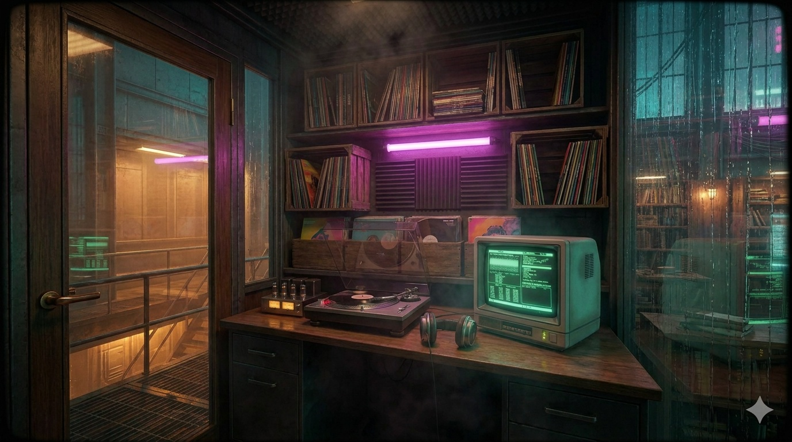

Back to the upper floor
Records
Play / pause
Read the post
↩ UPPER FLOOR
RECORDS
▶ PLAY / PAUSE
READ ▸
Exit
READ ▸
-- NO SIGNAL --
PRESS P OR PICK A TRACK
█
Records
⏮
▶
⏭
Pick a record from the crates
Read ▸
LONGPLAY://CYBERSOUND — BOOTH TERMINAL
[ESC] BACK TO BOOTH
Как звучит киберпанк?
longplay ·
original ↗
LOADING /longplay/cybersound …
█